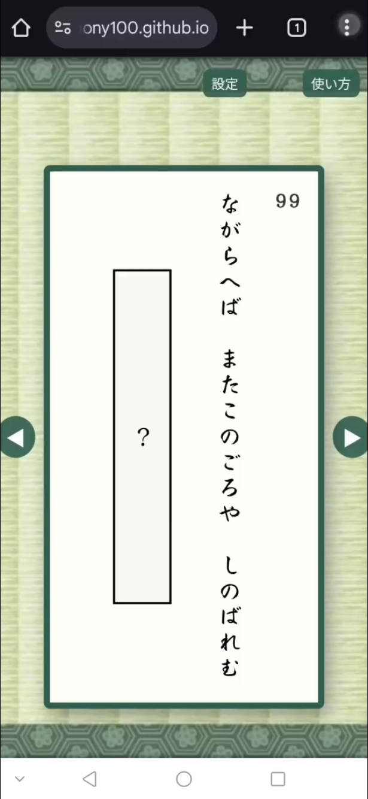
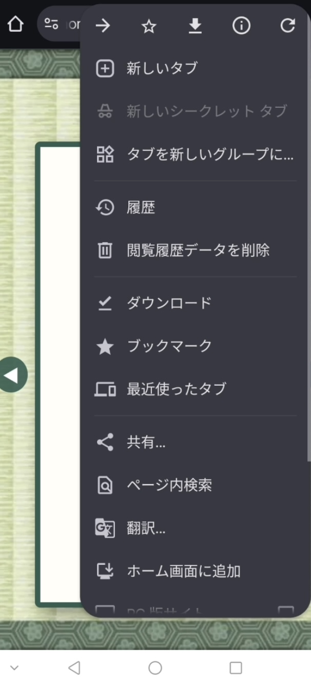
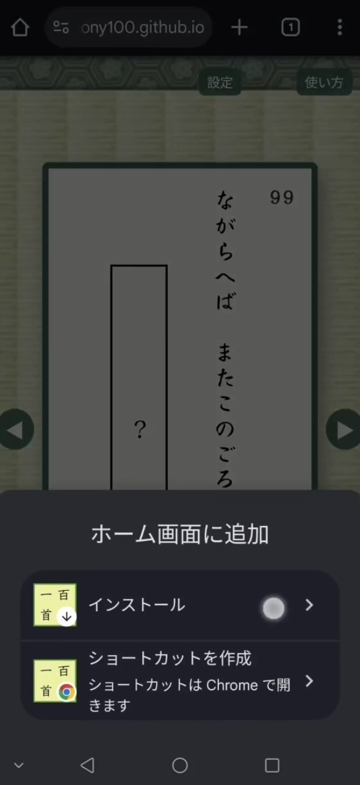
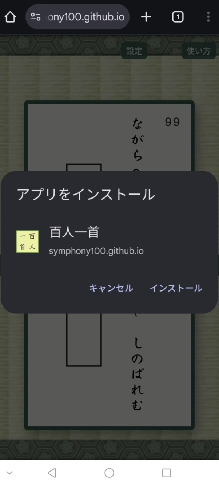
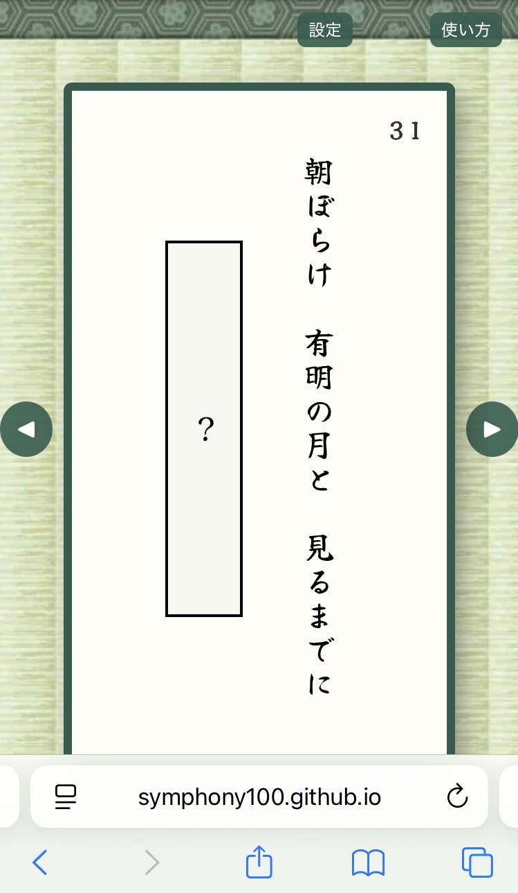
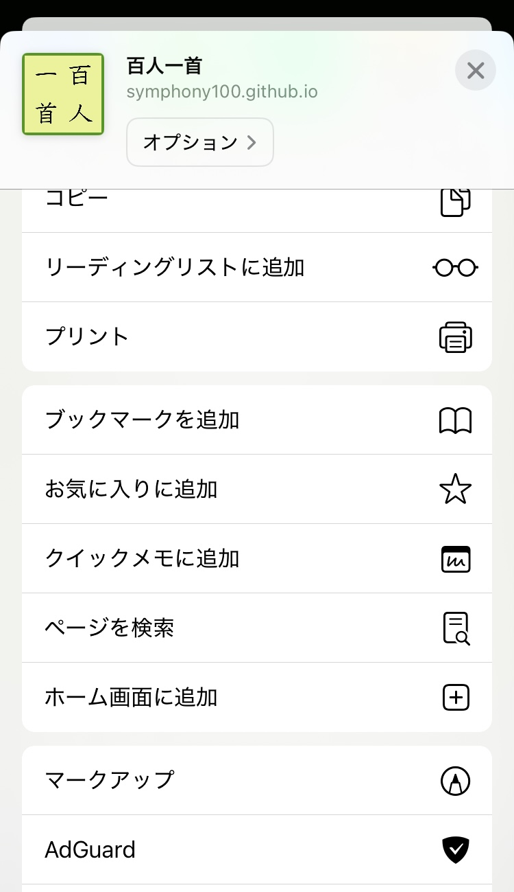
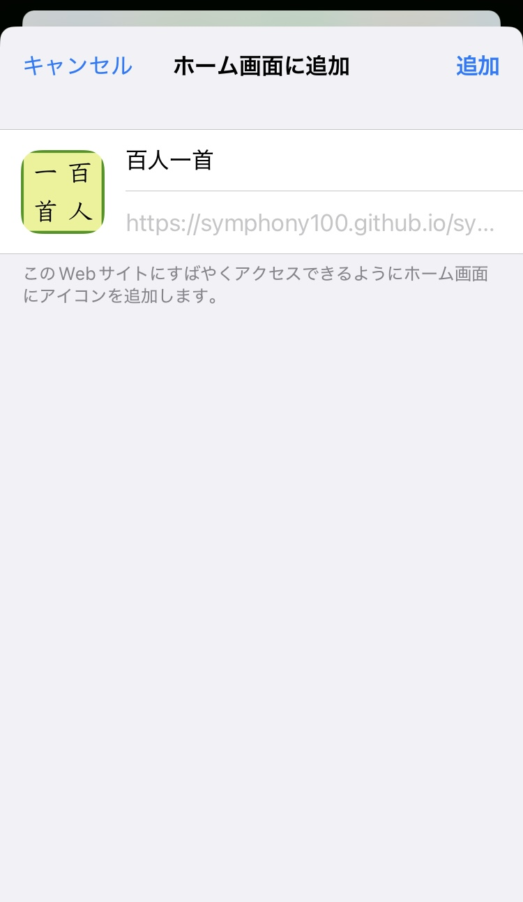

ステップ１：ブラウザで「百人一首」を開き、右上のメニューをタップ。
ステップ２：「ホーム画面に追加」を選択。
ステップ３：上のインストールを押す。
ステップ４：インストールを押して完了。
ステップ１：Safariで「百人一首」を開く
ステップ２：下の共有ボタンをタップ
ステップ３：「ホーム画面に追加」を選択して追加
（１）Google Chrome または Edge で開く。
（２）右上メニューから 「アプリとしてインストール」 を選ぶ。
（３）デスクトップやスタートメニューにアイコンが作成される。
・追加したアイコンから起動すると、アプリ風に全画面で楽しめる。
・インターネット接続が必要な場合もあるので注意。